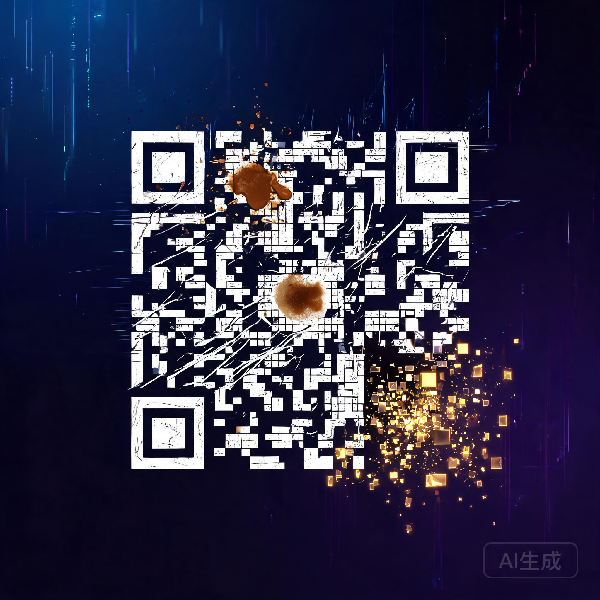

二维码被手指遮住一角照样能扫、划痕累累的老 CD 还能放、40 多亿公里外旅行者号传回的照片没有雪花点--背后都是同一个 1960 年的数学模型在「起死回生」。

这个几乎没人叫得出名字的数学模型，每天在你口袋里安静工作。它让二维码容忍遮挡、让 CD 原谅划痕、让深空信号穿越宇宙噪声。你亲手把数据「打烂」，点一下，数据完整复活。
下面从选场景开始，一步步感受纠错码怎么救场。
每个场景对应不同的冗余参数，点一下就切换。
遮挡一角照样能扫
划痕累累还能播放
40 亿公里传照片
坏两块盘不丢数据
输入一小段文本，RS 码会在数据后面追加校验符号。共 n 个符号 = 数据 + 校验，理论上最多可恢复等于校验数个擦除。
默认给了一句示例，你也可以改成自己的文本。
蓝色方块是数据符号，金色方块是校验符号。每个符号是一个 GF(256) 域元素。
点「编码」生成码字方块
点击任意方块把它擦除，模拟污损、丢包、遮挡。实时显示已损坏数与冗余上限。
编码后这里会出现可点击的方块
点击恢复，校验符号参与计算，被损坏的方块逐个变绿复原。若损坏超过上限，数据无法恢复。
编码并打烂后，点下方按钮恢复
拖动滑块调节冗余比例，图表实时展示「损坏比例 -> 恢复成功率」的关系。注意阈值处的骤降--这就是纠错能力的硬边界。
里德-所罗门码无处不在，只是从不露脸。
四个纠错等级 L / M / Q / H，分别可恢复约 7% / 15% / 25% / 30% 的数据。这就是 Logo 能印在二维码中间还能扫的原因。
来源：ISO/IEC 18004使用 CIRC（交叉交织里德-所罗门码），能纠正长达约 2.5mm 的划痕。没它你的老唱片早就花屏了。
来源：IEC 60908 (CD-DA)40 多亿公里外的探测器，用 RS 码级联卷积码，把照片一个像素不错地传回地球。信号弱到几乎淹没在噪声里。
来源：NASA / CCSDS 标准RAID 6 用双重校验容忍同时坏两块盘。云存储的纠删码本质也是 RS 码，用更高效的变体降低开销。
来源：SNIA / 分布式存储标准